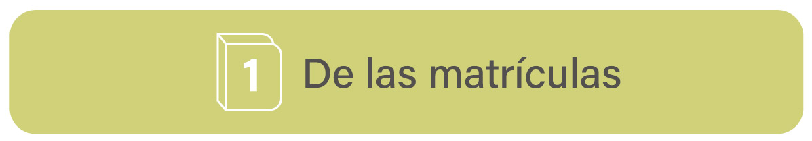

1 / 4

La matrícula es el acto mediante el cual la persona admitida queda vinculada en calidad de estudiante en un programa de educación no formal ofrecido por ASCOFAME, pagando para tal efecto el valor de los derechos correspondientes. Los aspirantes admitidos a un Curso de educación no formal deberán matricularse dentro de los términos señalados. Sustitución del estudiante.
El estudiante que se haya matriculado y no pueda realizar en su totalidad el curso, podrá ceder el monto pagado a otra persona que cumpla con los requisitos de admisión, para matricularse en el mismo programa siempre y cuando el curso no se haya iniciado. En los Cursos o Diplomados de más de 20 horas, una vez iniciado el Curso o Diplomado se podrá hacer la sustitución, siempre y cuando no hayan transcurrido el 10% de las horas previstas.
2 / 4
El Coordinador Académico o quien él delegue, podrá reservar el cupo al estudiante que una vez cancelada su matrícula deba por razones de fuerza mayor suspender su asistencia, para lo cual deberá realizar dicha solicitud por escrito al Coordinador antes del inicio del diplomado. Esta reserva se entiende que se hace por un semestre, contado a partir del siguiente semestre de la fecha de realización de la reserva, el cual puede ser prorrogado por un semestre más, previa solicitud escrita por parte del estudiante y aprobada por Coordinación Académica.
Si el estudiante no notifica por escrito su decisión de reservar el cupo dentro de los plazos establecidos, pierde el cupo y el valor cancelado quedará a favor de ASCOFAME. Para los cursos o diplomados que tengan una duración mayor de 20 horas, la reserva de cupo podrá efectuarse siempre y cuando no haya transcurrido el 10% del total de las horas del mismo. En el momento en que la persona decida reintegrarse, deberá participar en la totalidad del nuevo curso o diplomado, independiente de la cantidad de horas asistidas anteriormente.
3 / 4
En los Cursos de educación no formal, el cumplimiento de la metodología propuesta para cada uno y la navegación y cumplimientos de las tareas o trabajos propuestos, constituyen los requisitos indispensables para otorgar el Certificado o diploma. Se entenderá cumplido el requisito de navegación, cuando se verifique la navegación activa del estudiante en el 85% de las horas del respectivo Curso y/o Diplomado de educación no formal, y los exámenes deben ser superados con una nota igual o superior a 4.0.
La navegación en un porcentaje inferior al señalado en el inciso anterior, sólo otorgara el derecho a la expedición, previa solicitud del estudiante, de una certificación secretarial en que se acreditará el número de horas en las que el estudiante participó. La única constancia o prueba válida de la navegación del estudiante en el Curso o Diplomado, la constituirá el seguimiento electrónico de actividades en la plataforma virtual (Aula virtual), y el cálculo de horas que se estipula para cada actividad pedagógica o de aprendizaje.
❮
❯